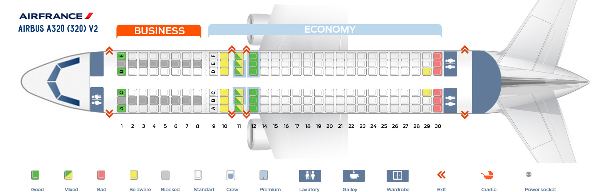

Általános információk
Az Airbus A320 két hajtóműves, egyfolyosós, keskeny törzsű, közepes hatótávolságú utasszállító repülőgép, amelyet az Airbus az 1980-as évek végére fejlesztett ki, konkurenciát állítva elsősorban a Boeing 737-nek és a McDonnell Douglas DC–9 különböző utódtípusainak. Az első utasszállító repülőgép, ahol digitális elektronikus kormányrendszert alkalmaztak. Napjainkig több mint 4400 darabot állítottak forgalomba, ezzel a második legnagyobb darabszámban épített utasszállító repülőgép lett.
Ugrás az oldal tetejéreFejlesztése
Az Airbus gyár alapításától kezdve azt a célt tűzte ki maga elé, hogy konkurenciát állítson az akkori vezető nyugati gyártók, a Boeing, illetve a Douglas termékeinek. Így a késői 60-as, korai 70-es években az A300 tervezésénél is ezeket a már ismert piaci követelményeket tartották szem előtt. Az A300-as típusból így az évek alatt számos variáció készült, érdekesség az A320-as szempontjából az A300B10 jelű típusvariáns volt, amely kisebb volt az alapmodellnél, ebből a variánsból végül kifejlesztették az A310-es nagy hatótávolságú típust. Ezután fordult a gyár a Boeing 737 és a McDonnell Douglas DC–9 által reprezentált kategóriához, a kisebb kapacitású, gazdaságos, közepes hatótávolságú gépekhez.
Az új program végül 1977 júniusában indult útjára, a British Aerospace telephelyén, az Airbus gyárcsalád tagjainak segítségével, de magától az Airbustól elválasztva. A társulás neve Joint European Transport (JET) volt, amely Egyesült Európai Szállítmányozásként fordítható, de egyben egy szójáték is, hisz a JET mozaikszó a sugárhajtómű megnevezése is. A cél, egy 130-188 férőhelyes, két CFM56s sugárhajtóművel szerelt típus létrehozása volt, amelynek utazósebessége meghaladja a Boeing 737-es típusáét, és képes akár a hangsebesség 0.84 szorosára is utazási sebességként. A programot később az Airbus zászlaja alá helyezték át az 1980-as években, a fejlesztés vezetését is ide helyezték át, de az eddigi vezető fejlesztőt megtartva.
Az alapmodell, amelynek fejlesztési neve Single-Aisle (SA), itt már három variánssá vált szét, amelyek lényegi különbsége a törzshossz, és így az ülésszám volt, ez 125 és 180 között változott, fejlesztési neveik rendre SA1, SA2 és SA3 lett. A későbbi A319, A320 és A321-es típusvariánsok elődjei voltak ezek.
1981 februárjában az SA2-es modellt átkeresztelték A320-ra, ezzel ez lett a típuscsalád alapvariánsa és egyben névadója. 150 fő befogadására tervezték, és 3440 km hatótávolsággal rendelkezett, a szárnyakba szerelt üzemanyag tartályok segítségével. Hosszabb hatótávra a középső, szárnyak között, a törzs alatt elhelyezett tartállyal kibővítve már 5280 km-es távolságokra is használhatóvá vált.
Ugrás az oldal tetejéreGyártása
A gyártás megkezdése számos oknál fogva később indult. A brit, francia és nyugatnémet gyárak versenyeztek a kiosztandó feladatokért, ezzel pedig a jövendő profitért és munkahelyekért. A német gyárak minimum a teljes gyártás 40%-át követelték, mialatt a britek is maguknak követelték a vezető gyárak jogát, hivatkozva a kutatás alatt játszott szerepükre és tapasztalatukra. Másik problémát jelentett a gyártás beindításánál a hiányzó tőke, amelyet a részt vevő országok repülőgépipara az anyaországtól várt tőkeinjekció formájában.
Első megrendelője az Air France volt 1981-ben, és a gépek üzembe állítását 1986-tól tervezték. A rövid és közepes hatótávolságú A320-as gyártása 1984-ben kezdődött meg. A gyártás indításakor 5 megrendelő várt összesen 96 darabra.
Prototípusa 1987. február 14-én gördült ki a gyárból, hatalmas ünnepségek közepette, lézershow-val és szárazjéggel felvezetett, látványos bemutató keretében. A gazdasági és politikai elit is képviseltette magát az eseményen, például Wales hercege és hercegnője. Február 22-én repült először, összesen 3 óra 23 percet. Ez volt a berepülő program kezdete, amely végül 1200 repülési órát és 530 fel- illetve leszállást igényelt.
Az Európai hatóságoktól 1988. február 26-án kapta meg a szükséges engedélyeket, és két változata került sorozatgyártásra. Az egyik a 130-154 személyes A320–100-as, a másik a nagyobb felszállótömegű, maximum 180 személy szállítására alkalmas A320–200-as. Az első példányokat az Air France és a British Airways vette át 1988. március 26-án, módosított hajtóművel felszerelt változatát pedig 1989 májusában a szlovén Adria Airways állította forgalomba.
2008. szeptember 28-án Tiencsinben felavatták az Airbus kínai gyárát, amely a nyugat-európai repülőgépgyártó-csoport első összeszerelő üzeme Európán kívül, s mindenben megegyezik a hamburgival.
Ugrás az oldal tetejéreJellemzői
A világ legkorszerűbb műszaki vívmányaival felszerelt utasszállító repülőgépről kezdetben nagyon sok ellentmondó vélemény alakult ki szakmai körökben, mivel az erősen elrugaszkodott az addigi szemlélettől. Az Airbus gyártmányainak történetében először használtak műanyagokat a szerkezeti elemek gyártásához, ezenkívül számítógépes, elektromos vezérlésű (fly-by-wire) kormányrendszerrel, a szokásos szarvkormány helyett joystickkel és digitális pilótafülkével szerelték fel.
A kezdeti modell a központi (nem a szárnyakban elhelyezett) üzemanyag tartállyal kiegészítve 5,280 km-es hatótávolsággal rendelkezett, és szélesebb volt, mint a konkurens Boeing B737-es (3,7m a 3,45 m-rel szemben).
| Műszaki adatok | |
|---|---|
| Hossz | 37,57 m |
| Magasság | 11,76 m |
| Törzs szélessége | 3,95 m |
| Szárny fesztávolság | 34,10 m |
| Legnagyobb tömeg (üzemanyag nélkül) |
62,5 t |
| Hatótávolság | 6100 km |
| Max repülési sebesség | 903 km/h |